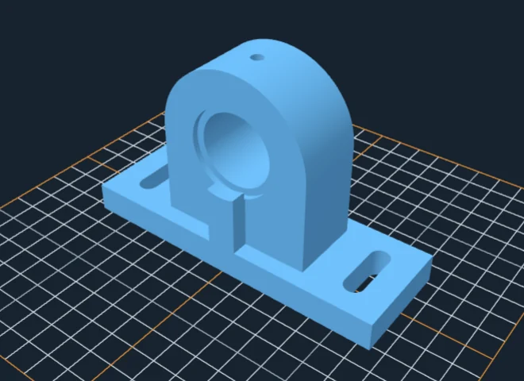
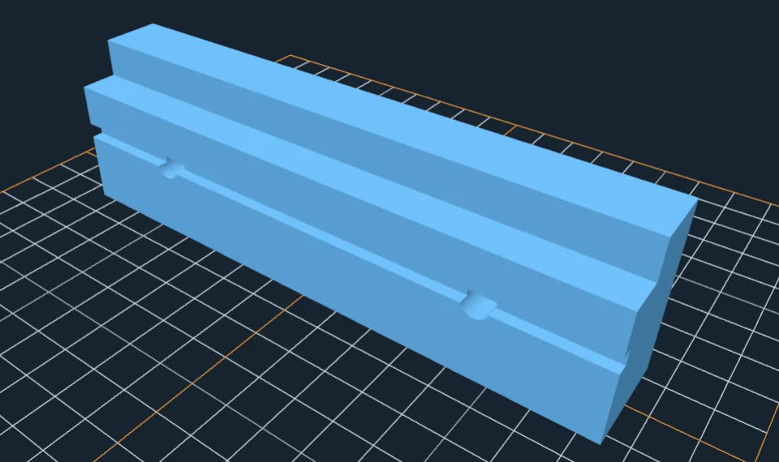

Convert STL to STEP
An STL is made of triangles only, so curves come out faceted. The local converter rebuilds planes and cylinders from it. Compare the result with the original and keep working on it as a CAD solid.

STL meshCAD solidDesign parts, repair meshes and build assemblies that actually move. Formnaro runs locally on Windows, and you don’t need an internet connection to model.

This five-axis gantry mill shows what joints and couplings can do. Pick an axis and drag the slider: the tool head travels, the rotary table turns, and the pinion follows the tilting cradle through a 48:20 coupling.
144 parts, 78 joints. The cradle drives the pinion through a 48:20 coupling. The Formnaro recording shows one axis at a time; when you drag a slider, the others return to home. Download the model
 Home position
Home position
Draw the outline line by line with the pen and sketch the holes as circles. Formnaro turns your strokes into lines and circles, makes a part from them and sends it over your local network to the PC. One click there and it sits on the workspace as a normal model, with no cloud and no file copying.
Real recording: Formnaro tablet app (development build) and Formnaro 0.148 on Windows. The pen is overlaid and the drawing is sped up. See the Nightly with tablet companion mode. Pairing with the current Android release
One program, four interfaces. Switch at any time; your model stays the same.

For your first bracket on a weekend.
Describe a change to your model. Formnaro plays it back step by step without touching your model. AI is optional; modelling works without it.
The jobs most people open Formnaro for.
An STL is made of triangles only, so curves come out faceted. The local converter rebuilds planes and cylinders from it. Compare the result with the original and keep working on it as a CAD solid.

STL meshCAD solidPick the edges, enter a radius, check the preview. Here the outer edges of a vise jaw are rounded with 3 mm fillets.

 BeforeAfter
BeforeAfter
Check joints, couplings and gear ratios before you print or mill. The ATLAS-5 above is one of those models.